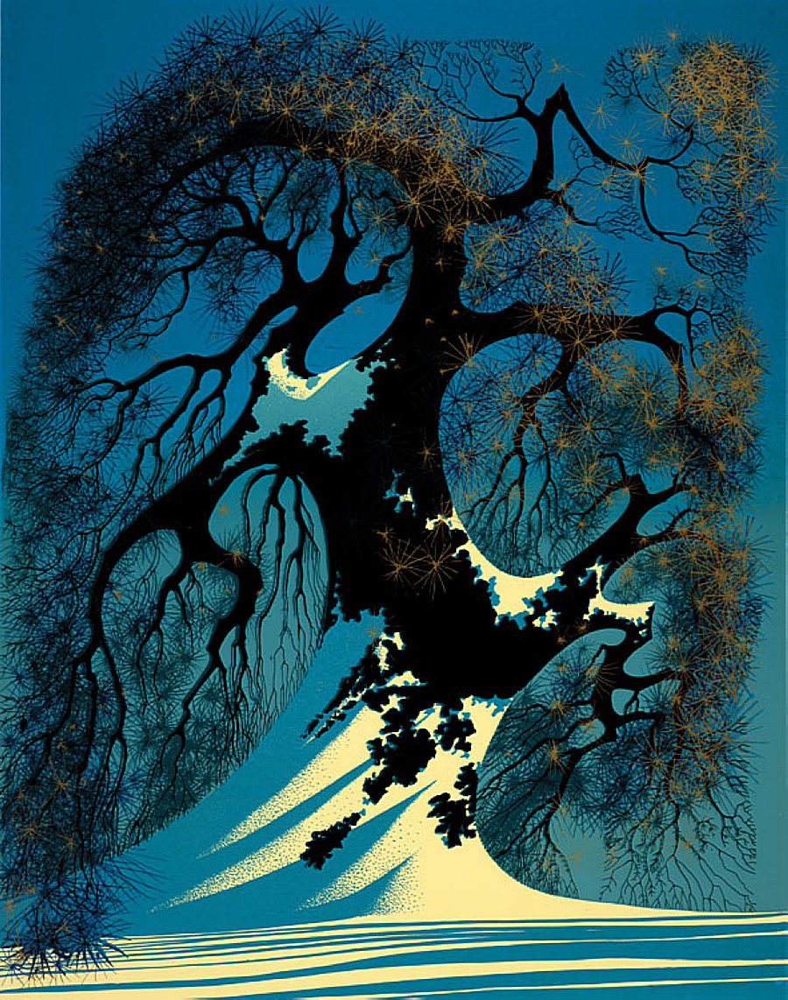
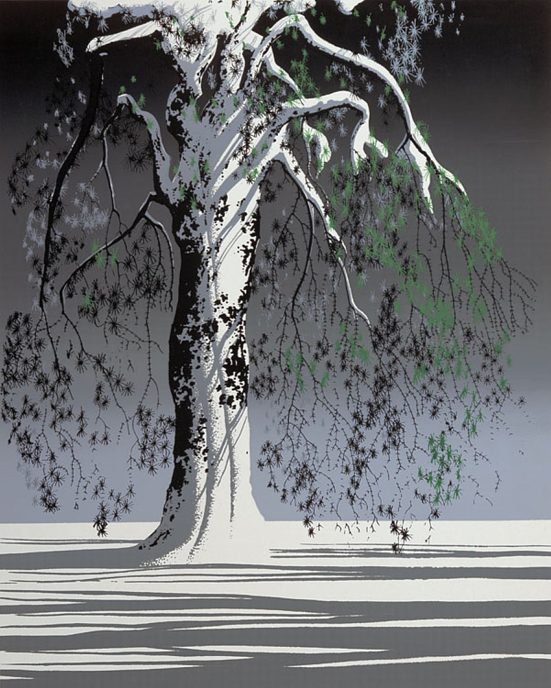

Update 1 | Update 3 | Final Report | Reference Images
Update 2
So, I picked the work of artist Eyvind Earle. Reference Images His paintings are mostly of landscapes, cliffs and forests. I really like the way he represents trees in his paintings. They all seem to have self - similar patterns which look very interesting. I would like to try to replicate some these stylized trees using L systems.
Some other useful links I found.
• Link 1
• Link 2
• Link 3
I really like the tress in these images


I have been learning and testing turtle graphics. This is a screen capture of a tree generation using L-systems I was testing in Houdini.